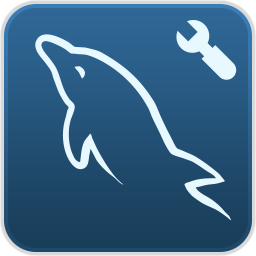

Pod
(mount vào /var/lib/mysql)"] PVC["PVC
(Persistent Volume Claim)
request 1Gi"] PV["
PV (Persistent Volume)
1Gi"] Disk["

Disk thực tế
(hostPath / EBS / NFS)"] Pod -->|"claim"| PVC -->|"bind"| PV -->|"ánh xạ"| Disk
Pod là tạm thời, và dữ liệu trong container cũng mất khi Pod bị xoá. Với các ứng dụng cần lưu trữ lâu dài (database, service đọc/ghi file), ta cần Persistent Volume (PV) – một phần lưu trữ độc lập với vòng đời của Pod. PV có thể nằm trên ổ cứng của node, trên NFS hoặc trên cloud (EBS, EFS). Lưu ý quan trọng: Kubernetes không chịu trách nhiệm quản lý các disk – việc cấp phát và bảo trì disk do bạn (hoặc cloud provider) đảm nhiệm.
Pod dùng PVC để yêu cầu storage; PVC được bind với một PV; PV ánh xạ tới ổ đĩa thực tế. Dữ liệu nằm trên ổ đĩa nên vẫn còn khi Pod bị xoá.
| Loại | Đặc điểm | Rủi ro |
|---|---|---|
| Local volume | Gắn trực tiếp vào 1 node trong cluster | Mất dữ liệu nếu node đó crash |
| Remote volume | Không nằm trên node của cluster (EBS, EFS, NFS...) | An toàn hơn khi node lỗi |
Storage Class cung cấp cơ chế tạo và quản lý volume tự động: thay vì tự tạo PV thủ công, bạn định nghĩa một Storage Class (ví dụ tự tạo EBS khi cần), rồi PVC chỉ cần trỏ tới Storage Class đó để được cấp volume phù hợp.
Pod request volume qua PVC; PVC request volume qua Storage Class; Storage Class tự tạo các volume đáp ứng yêu cầu (dynamic provisioning).
Tạo PersistentVolume + PersistentVolumeClaim và gắn vào Deployment MySQL (NodePort), sau đó xoá Pod để chứng minh dữ liệu không bị mất khi Pod được tạo lại.

MySQL Pod ghi dữ liệu vào PV (hostPath /data/mysql). Khi xoá Pod, Deployment tạo Pod mới gắn lại đúng PV cũ nên dữ liệu vẫn còn.
sourcecode/section_13_kubernetes_k8s_basic/persistent_volume/.Tạo file persistent-volume.yaml:
apiVersion: v1
kind: PersistentVolume
metadata:
name: my-pv
spec:
capacity:
storage: 1Gi
accessModes:
- ReadWriteOnce
hostPath:
path: /data/mysql
---
apiVersion: v1
kind: PersistentVolumeClaim
metadata:
name: my-pvc
spec:
accessModes:
- ReadWriteOnce
resources:
requests:
storage: 1Gi
---
apiVersion: v1
kind: Service
metadata:
name: mysql-service
spec:
type: NodePort
ports:
- port: 3306
targetPort: 3306
nodePort: 30088
selector:
app: mysql
---
apiVersion: apps/v1
kind: Deployment
metadata:
name: mysql-deployment
spec:
replicas: 1
selector:
matchLabels:
app: mysql
template:
metadata:
labels:
app: mysql
spec:
containers:
- name: mysql
image: mysql
env:
- name: MYSQL_ROOT_PASSWORD
value: password123
ports:
- containerPort: 3306
volumeMounts:
- name: mysql-persistent-storage
mountPath: /var/lib/mysql
volumes:
- name: mysql-persistent-storage
persistentVolumeClaim:
claimName: my-pvckubectl create -f persistent-volume.yaml
kubectl get all
kubectl get pv
kubectl get pvc
kubectl get pvc --all-namespacesTạo tunnel tới Service:
minikube service mysql-service --url
http://127.0.0.1:<port>Mở MySQL Workbench, kết nối với host = localhost, port từ lệnh trên, username = root, password = password123. Chạy script script.sql:
CREATE DATABASE mydb;
USE mydb;
CREATE TABLE employee (
id INT PRIMARY KEY AUTO_INCREMENT,
name VARCHAR(50),
age INT,
salary DECIMAL(10,2)
);
INSERT INTO employee (name, age, salary) VALUES
('John Doe', 30, 5000),
('Jane Smith', 25, 4000),
('Mike Johnson', 35, 6000);
SELECT * FROM employee;kubectl get pods -o wide
kubectl delete pod mysql-deployment-<xxxxxx>Thay <xxxxxx> bằng đuôi ngẫu nhiên của Pod. Chờ Pod mới được tạo (Deployment tự phục hồi).
Truy cập lại MySQL Workbench và chạy:
SELECT * FROM mydb.employee;Bạn sẽ thấy 3 bản ghi vẫn còn nguyên – dữ liệu được lưu trong PV, không mất khi Pod chết.
kubectl delete -f persistent-volume.yamlkubectl get pv và kubectl get pvc hiển thị trạng thái Bound.employee vẫn còn.Pending không Bound đượckubectl get pv; đảm bảo PV có đủ capacity: 1Gi và accessModes: ReadWriteOnce.CrashLoopBackOff/data/mysql trong minikube chưa tồn tại hoặc không ghi được.minikube ssh -- sudo mkdir -p /data/mysql rồi apply lại.ReadWriteOnce (một node ghi), ReadOnlyMany, ReadWriteMany – tuỳ loại storage hỗ trợ.hostPath (Local volume) để demo; trên cluster thật dùng StorageClass + EBS/EFS.